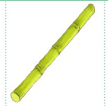

Zoezi la pili
Andika majina ya picha hizi kwenye daftari.

Andika jibu kwa mkono katika sehemu hii.
Zoezi la tatu
Andika irabu zinazokosekana.
1. m __ma
2. mem__
3. m__ba
4. ba__
5. ma__a
Andika jibu kwa mkono katika sehemu hii.
Somo la tatu: Kuandika herufi ya konsonanti d
Somo la tatu
Kuandika herufi ya konsonanti d
Katika somo hili utajifunza kuandika herufi ya konsonanti
d .